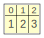
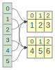
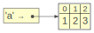
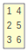

html_widgetThis is an example of a Shiny app that visualizes Python data structures. Try entering “[1, 2, 3]” below:
Diffing objects seems to be of general interest for data scientists. Data diffs tackles the data bit, and it can be nice to show when it’s hard to tell the differences btw two tables.
One tool we can reuse is daff, which visualizes data diffs.